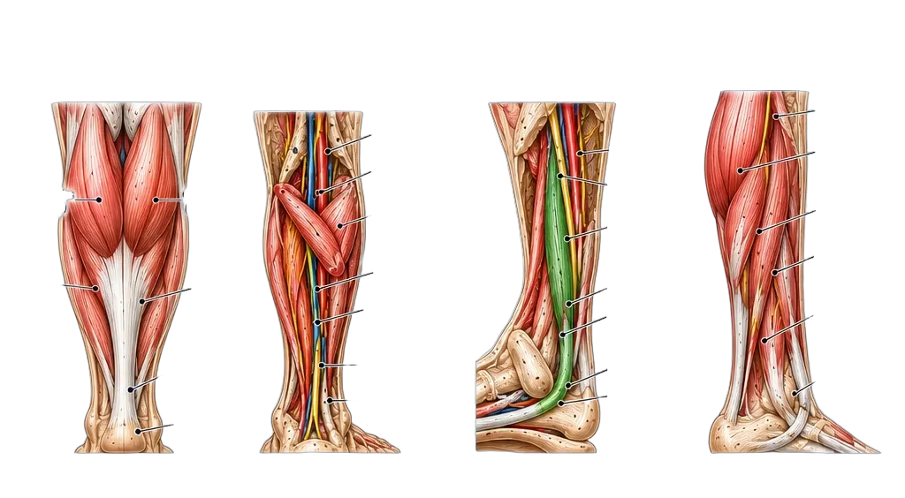
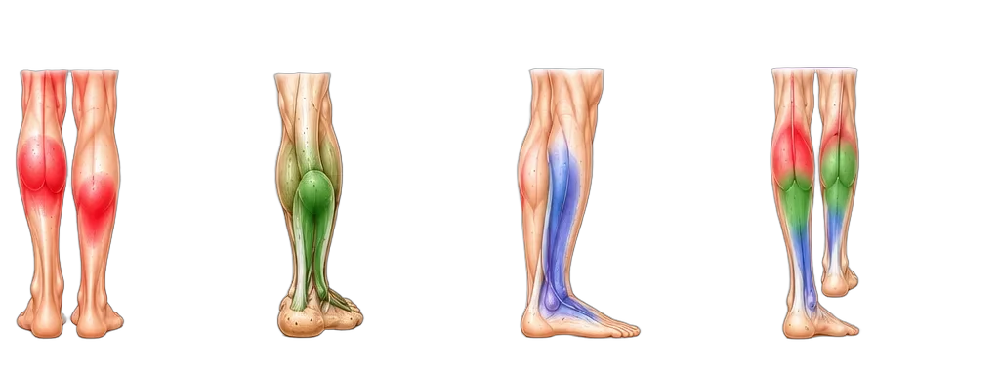

The Calf Complex
Anatomy · Attachments · Pain Patterns · Clinical Insights
Ground Up. Built to Move.
Anatomy · Attachments · Pain Patterns · Clinical Insights
Ground Up. Built to Move.
The calf complex includes the gastrocnemius (two heads), soleus, and tibialis posterior. These muscles power push-off in walking and running, stabilize the ankle, and support the arch. Dysfunction causes calf pain, Achilles tendon pain, heel pain, and contributes to plantar fasciitis.


| Muscle | Origin | Insertion | Function |
|---|---|---|---|
| Gastrocnemius | Femoral condyles (medial + lateral) | Calcaneus (Achilles) | Plantarflexion, knee flexion |
| Soleus | Posterior tibia, fibula head | Calcaneus (Achilles) | Plantarflexion |
| Tibialis Posterior | Posterior tibia, fibula, IO membrane | Navicular, cuneiforms, MT 2–4 | Inversion, arch support |
| Muscle | Primary Pain Location | Radiation | Key Movement Pain |
|---|---|---|---|
| Gastrocnemius | Upper calf, back of knee | Stays in upper calf | Push-off, calf raises (knee straight) |
| Soleus | Heel, Achilles | Heel → low back (SI joint) | Standing, walking, bent-knee calf raise |
| Tibialis Posterior | Inner ankle, arch | Achilles → sole of foot | Single-leg heel raise, inversion |